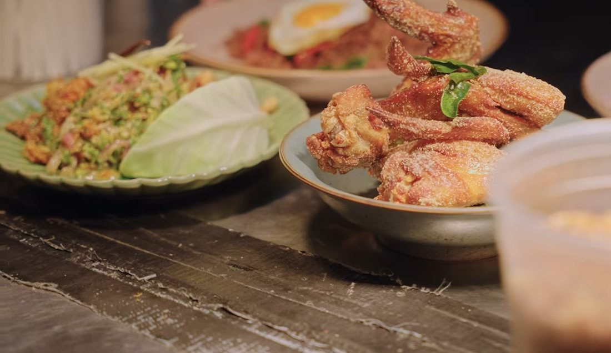
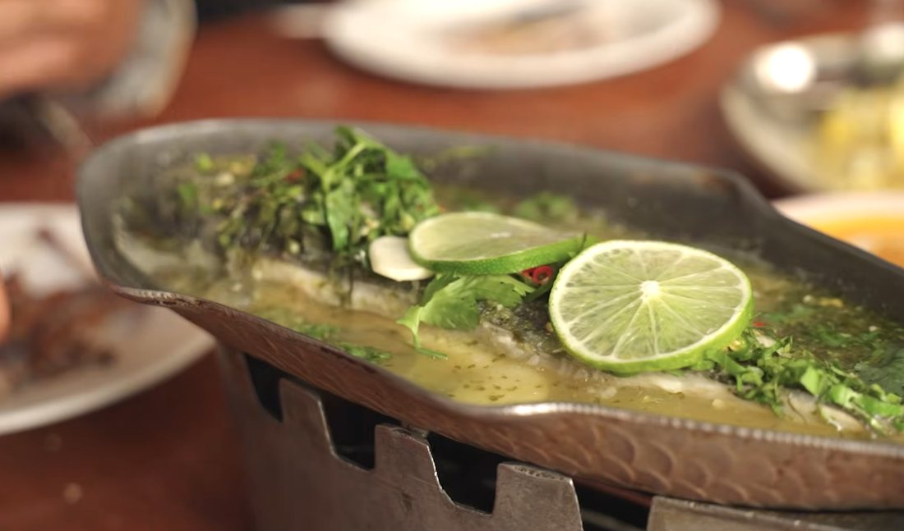
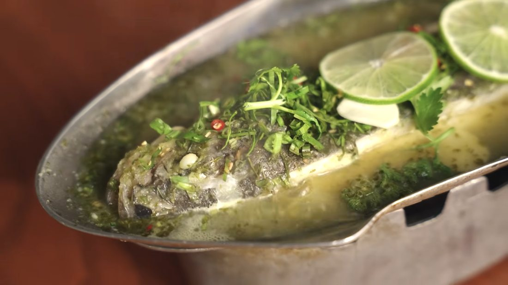
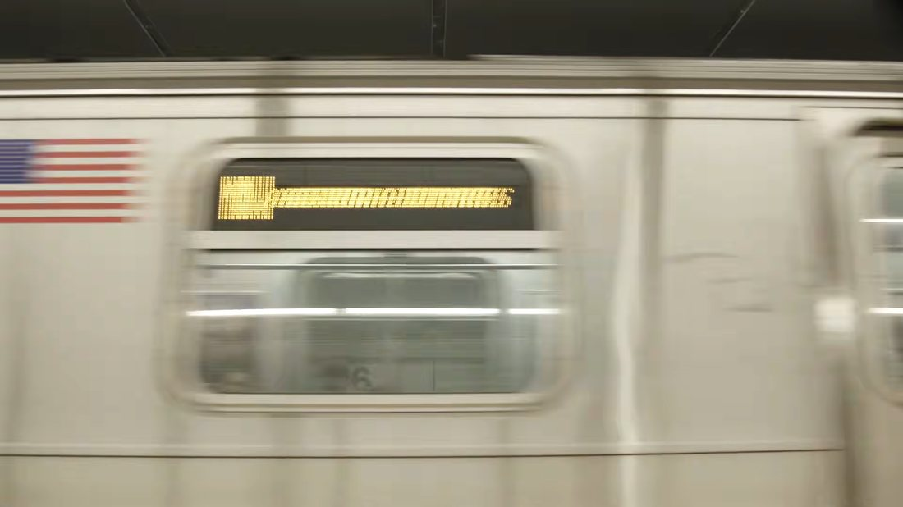
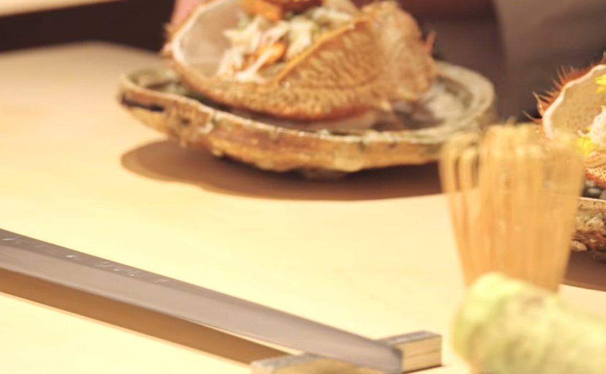
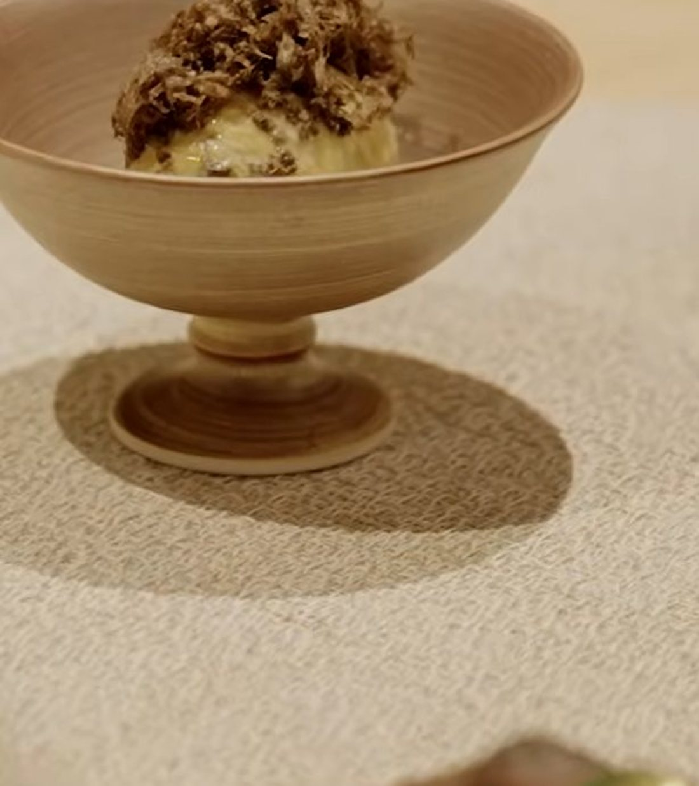
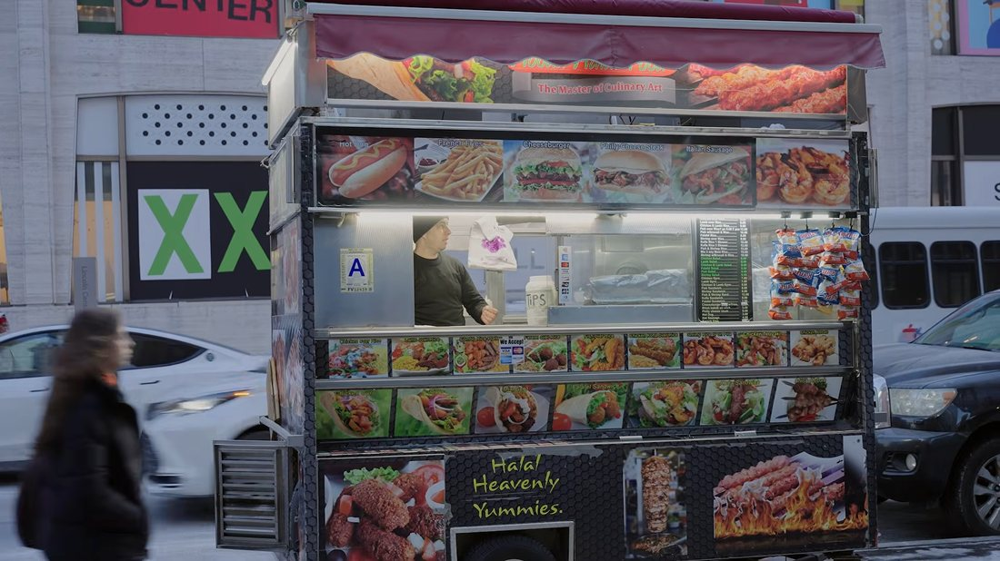

主厨 Quamon Watchi 带作家 Nana 在纽约吃了三站：泰国菜 Fish Cheeks、藏在中央车站的 Joji，以及中城的清真餐车。这里只提取字幕里能照着点的菜名、酱汁和点单说法，不替任何一家店下“最好吃”的结论。
适合谁：想照着视频点单的人。三站都有明确菜名或点单规则：鸡翅、整鱼、蟹肉炒饭、毛蟹、金枪鱼、松露冰淇淋、半鸡半羊盖饭00:01:1800:02:2700:05:2000:08:51。
不适合谁：想拿这篇找价格、地址和营业时间的人。字幕没有给出任何一家店的具体价格、门牌号或营业时段。
视频里没说：三站的花费、排队时长、预订方式，以及 Joji 在中央车站内的具体入口位置。字幕只说它“隐藏在中央车站里”00:04:51。
第一站去 Fish Cheeks。视频说这家是家庭式用餐，适合把菜点满一桌一起吃00:00:3000:01:05。
第二站 Joji，视频说它在中央车站里面，位置隐蔽、容易走过头00:04:5100:04:55。
第三站是中城的清真餐车，视频称它为经典餐车00:08:2300:08:44。
| 要决定的事 | 视频里的说法 | 照着做 |
|---|---|---|
| Fish Cheeks 点多少 | 这家是家庭式，适合多人分食；同伴说和熟客吃饭每次都点一样的菜00:01:05 | 按分享菜点，别一人一份地算 |
| 整鱼要不要点 | 视频说菜单上有整条鱼就点，这条是姜汤蒸鲈鱼，还特地点名要喝汤00:02:1900:02:2700:02:33 | 点整鱼时把汤也留下来尝 |
| Joji 吃什么形式 | 这里提供厨师亲自挑选的菜肴，而且每次都是同一个厨师掌勺00:05:0000:05:07 | 按主厨安排走，别指望固定菜单 |
| 清真餐车怎么点 | 同伴的固定单是半只鸡肉、半只羊肉、生菜、西红柿、辣酱和白酱00:08:51 | 照这个组合报单，再按自己口味调酱 |
| 白酱和辣酱放多少 | 一人说多放白酱和辣酱00:08:56，另一人说辣酱只需一点点00:09:00 | 先少要辣酱，白酱按口味加 |
| 肉要不要切碎 | 视频里明确说“不要切得太碎，我喜欢大块的”00:09:30 | 报单时顺手说明切块大小 |
视频开场就把鸡翅叫作重点，同伴说它外面裹着甜中带酸的调味料00:01:2000:01:35。同桌还点了蒜香猪脸肉00:01:18。

点菜策略很简单：所有菜都当分享菜处理。视频说这家店“家庭式”，他们每次和同伴吃饭都点同样的菜00:01:0200:01:05。
整鱼是姜汤蒸鲈鱼。视频说带人来这里一定让他尝尝汤，汤里有酸橙、姜、辣椒和鱼露00:02:2700:02:3300:02:52。

还有鱼肚这一块，视频专门让人尝00:02:59。

蟹肉炒饭是泰国市场常见的经典菜，这里会配两种酱00:03:2700:03:32。视频里一人说其中一种“不太辣”，另一人吃后被问“辣到你了吗”00:03:4000:03:45。
吃法有明确指示：用勺子舀一勺蟹肉，把两种酱各加一点，再舀一勺一起吃00:03:3600:04:12。
视频说 Joji 藏在中央车站里，路过很容易错过；找到后会发现这里是厨师亲自挑选菜的地方00:04:5100:05:00。

这里的特点是每次都由同一位厨师掌勺，视频里两人到场时专门和厨师打招呼00:05:0700:05:11。
第一道是日式毛蟹配黄瓜醋，视频里说蟹肉甜、带一点咸，口感顺滑00:05:2000:05:40。

接着是烤鱼配鱼子酱，画面里有小花装饰；视频说鱼肉非常新鲜，鱼子酱是顶级00:06:0900:06:2600:06:36。
金枪鱼用热棒轻轻煎一下，字幕说老金枪鱼里有白鱼子酱，煎一下能分解鱼子酱、味道更佳；食材浸在柚子醋里，视频解释柚子醋类似柠檬或青柠汁的酸味酱油00:06:4800:07:13。
甜点是烤绿茶冰淇淋，上面撒了几乎等量的松露碎，淋蜂蜜并放海盐片；视频说绿茶味几乎尝不出来，松露和绿茶搭配得很好00:07:2300:07:3100:07:38。

视频把最后一站放在中城的清真餐车，说它供应整个纽约市的美食，并称它为经典餐车00:08:2300:08:2800:08:44。

固定点单是半只鸡肉、半只羊肉、生菜、西红柿，再加辣酱和白酱00:08:51。一人要求白酱和辣酱多放，另一人提醒辣酱只要一点点00:08:5600:09:00。
字幕转述的菜单写法是“鸡肉羊肉盖饭，白酱，一条辣酱”00:09:23。同行者还说白酱像蛋黄酱加柠檬汁、一点水、一点牛至；辣酱里有克什米尔辣椒00:09:0600:09:16。
饭里有豆蔻、丁香、姜黄等香料，还有炒洋葱和辣椒；羊肉偏辣，鸡肉用酸奶腌过00:10:2100:10:3700:10:43。
| 坑 | 怎么避 |
|---|---|
| 把“最好吃”当成可验证信息 | 视频里的“纽约最好鸡翅”“世界最好的Oma 之一”“城里最好的东西”都是评价，见第 9 节 |
| 以为有固定价格或地址 | 字幕没给价格、门牌号和营业时间，到店前另行核实 |
| Joji 走过头 | 视频说它藏在中央车站里、位置隐蔽，找的时候别只看大堂00:04:55 |
| 蟹肉炒饭只加一种酱 | 视频说配两种不同酱汁，舀一勺蟹肉分别加一点再吃00:03:3200:03:36 |
| 餐车辣酱一次加太多 | 两人对用量意见不同，先少要再补00:08:5600:09:00 |
| 肉被切得太碎 | 直接说要大块的00:09:30 |
| 把白酱配方当店家官方说法 | 那是同行者在视频里的描述，不是菜单确认00:09:06 |
| 说法 | 视频里怎么说 | 本文处理 |
|---|---|---|
| “纽约最好的鸡翅” | 同伴在尝过后这样说00:02:01 | 主观评价，可查的是“甜中带酸调味料”这一描述00:01:35；不下结论 |
| “世界上最好的Oma 之一” | 介绍 Joji 时这样说00:04:58 | 翻译用词在字幕里不稳定；只采信“厨师亲自挑选、同一厨师掌勺”00:05:0000:05:07 |
| “可能是城里最好的东西” | 评价清真餐车时这样说00:09:43 | 可查的是“性价比高”“能吃饱”的表述00:09:40；不下结论 |
| 白酱配方 | 同行者说像蛋黄酱加柠檬汁、水、牛至00:09:06 | 未获店家确认，按“视频里的说法”呈现 |